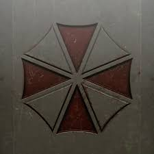

THE FALL OF UMBRELLA CORPORATION
Corporate Origins and The Progenitor Discovery
The Umbrella Corporation was founded in 1968 by Lord Oswell E. Spencer, Sir Edward Ashford, and Dr. James Marcus. Publicly, it was a multi-billion dollar pharmaceutical conglomerate known for its medical breakthroughs. However, its true purpose was the pursuit of the "Progenitor Virus," found in a rare flower in West Africa. This virus became the foundation for Umbrella's secret Bio-Organic Weapon (B.O.W.) program, aimed at creating the ultimate soldier.
The Raccoon City Catastrophe
The corporation’s downfall began in the Arklay Mountains, but reached its peak with the total destruction of Raccoon City. An internal leak led to a city-wide T-Virus outbreak, forcing the U.S. government to execute a thermobaric missile strike. This event finally forced the global community to recognize the catastrophic danger Umbrella posed to international security, leading to its official bankruptcy in 2003.
A Lasting Viral Legacy
Although the original Umbrella officially collapsed, its "viral" legacy refuses to die. Experimental logs and viral strains were sold on the black market, fueling bioterrorism for decades. Even today, the shadow of the red and white umbrella remains a symbol of corporate greed and scientific ethics gone horribly wrong.

The infamous red and white logo that marked the end of an era.